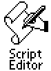

NPDS Scripts run as simple functions. They are compiled and evaluated every time a page containing a link to one is served. They can be immensely easy and simple to write or you can really hot-dog with them and make your Newton act much more like a big-iron server.
This tutorial is written assuming you'll type these scripts in yourself but I can understand a reluctance to do that! So, you can download a folder containing all these scripts in installer-package format. Just connect to your Newton and install them and they'll appear in your Script Editor!
Download Script Installers: scripties.zip (16k ZIP)
We'll start your foray into NPDS Scripting with the simplest type of script: one that just returns a static value. In the construction of NPDS, I made extensive use of pre-defined SSI like these so that apps such as DateServ and CardServ could have access to all the shared prefs like Color, Font, and so on.
You can easily create these types of includes and use them to substitute whole chunks of data or just one or two small things. Examples from the NPDS Manual of these types of includes would be the CREDITS tag which subs in a hyperlinked "Served by NewtonOS Personal Data Sharing" and the DEF_COLR tag which returns the default background color for all your NPDS pages.
So, in this example, we're going to define a tag that will sub in a special color when accessed. Open up the script editor and tap the Shiny New Script Icon so that you have a nice template to work on. Before writing any new code, tap on the script info field and enter the name and defined SSI for this Script.
Name: Lightyear PurpleSSI: LYPURP
I'd suggest NOT making it active yet, though. Close the info slip and let's continue.
One constant in the way I write a script is to define a local variable to catch my text output. I almost always use "theOut" so that I can glance at my code in any application and know that theOut is the destination for the text I am creating. So, we write:
local theOut;
Let's stuff a hex color value for "Lightyear Purple" into theOut. A quick trip to my Color Picker shows me that this color is equal to the HTML hex code "#CC66CC". So, I'll write:
theOut:= "#CC66CC";
Now, we want to return this value to the NPDS substitution engine so we'll write
return theOut;
Go ahead and tap "Evaluate". You'll see that when NPDS encounters this tag <LYPURP> inline somewhere in a block of text, it will substitute the text value "#CC66CC" in place of <LYPURP>.
|
Name: Lightyear Purple |
SSI: LYPURP |
|
|
|
It seems like overkill to write a script like this for a lousy old color, but what if you had 40 pages in your Notepad, used this color in all of them, and wanted to change the color because you realized it looked like that sweater that your 3rd grade teacher wore the day she made you wear the dunce hat. Since Newton's Notepad lacks a search and replace, what would you do?
Here's another idea: We're returning just a simple little thing in this example, but what if it was a bit more substantial? Consider beging able to put your favorite web graphic anywhere in your Notepad Server by just making and including a SSI that returns:
<IMG SRC =
http://www.life.uiuc.edu/~mwvaugh/lightyear/images/sdifft.gif"
ALIGN=LEFT BORDER=0 WIDTH=128 HEIGHT=48>
or something like that.. Catching on yet? At this level, Simple Scripting Architecture saves you a lot of typing.
To further drive my point home, consider if you had to change the location of that graphic to another server and you'd hand-coded it into 10 different pages.. you'd be glad you did it the SSI way.